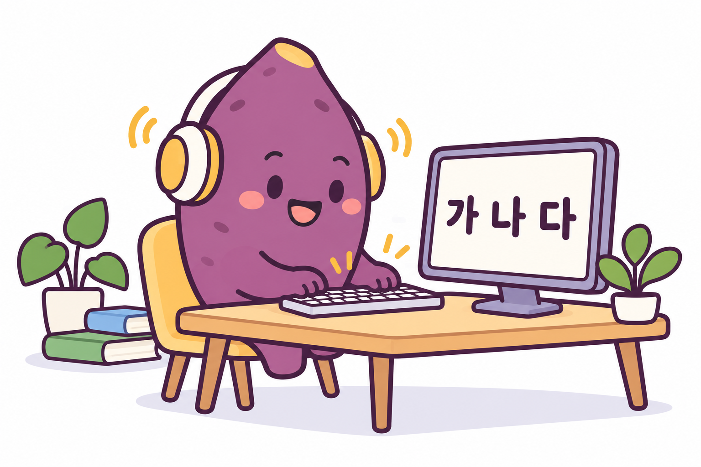
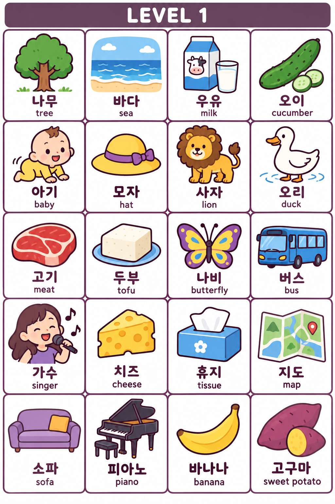
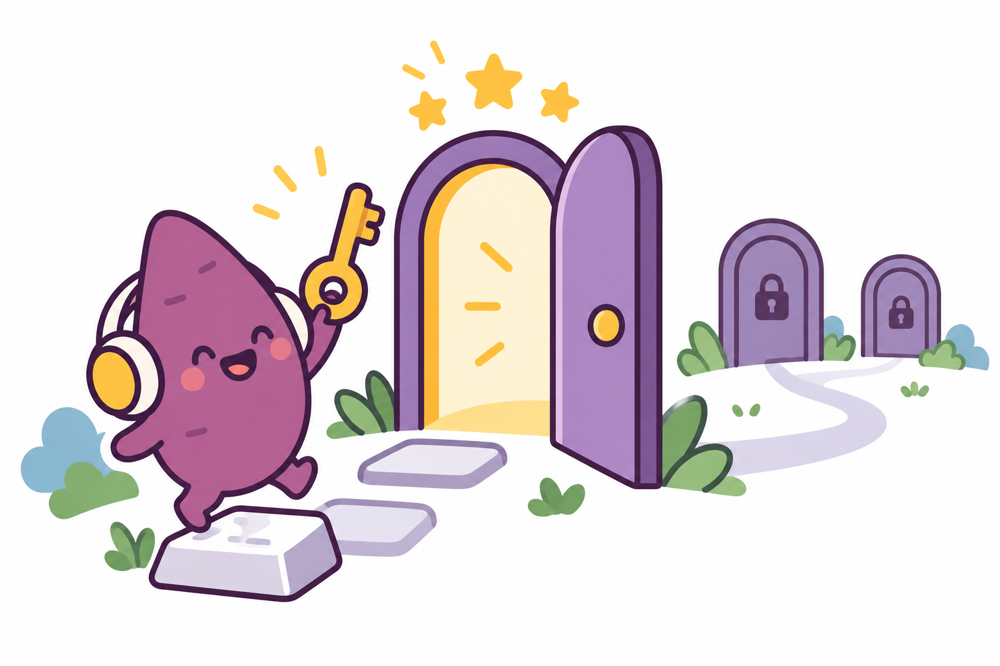

THE FIRST DOOR
Listen. Type.
Make it Korean.
20 everyday words. Two little missions.

What did you hear?
Listen and type. The picture and meaning appear after a correct answer.


MISSION COMPLETE!
How to play · Keyboard help
Listen, switch your keyboard to Korean, and type the word. Pictures and English meanings appear only after a correct answer, including during review. Each word has three tries. After three incorrect answers, you can see the answer and practise it again. Master all 10 words to complete a mission.
Windows: add Korean in Settings → Time & language → Language & region. Mac: add Korean in System Settings → Keyboard → Input Sources. On mobile, add Korean in your keyboard settings.
Both buttons read the complete word. Slow audio uses a lower speaking rate; the exact speed depends on your device’s Korean voice. Recorded audio is being prepared. Until recordings are added, audio uses your device's Korean speech voice. If audio is unavailable, install or enable a Korean voice, then reload. Progress is saved only in this browser. Clearing browser data removes it.